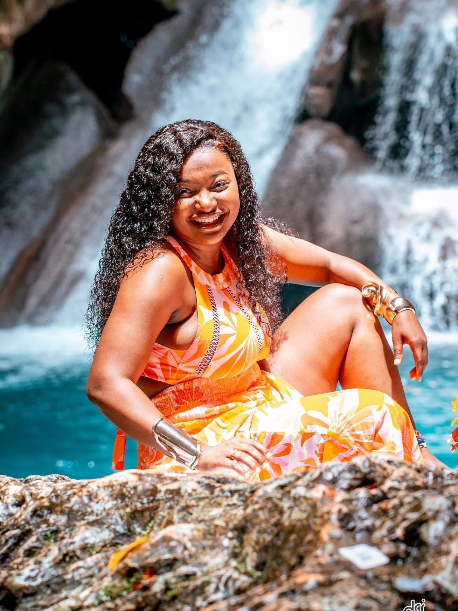
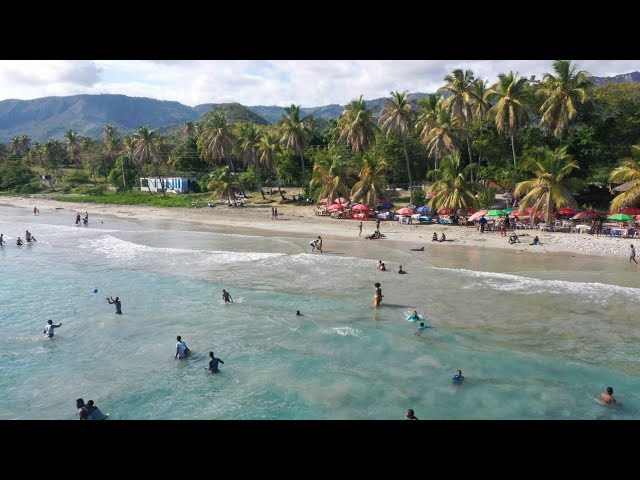
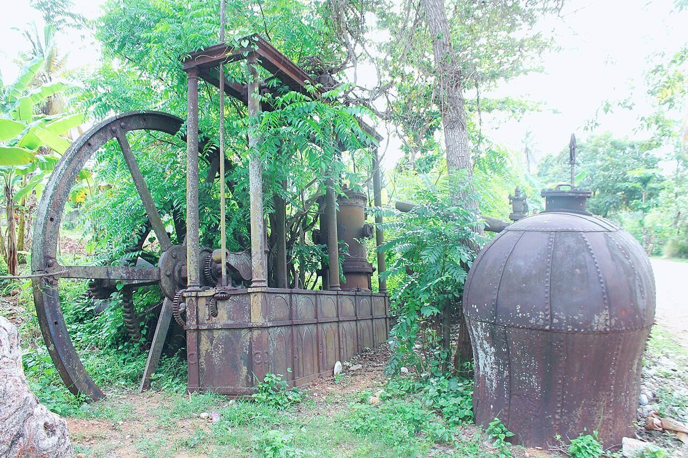
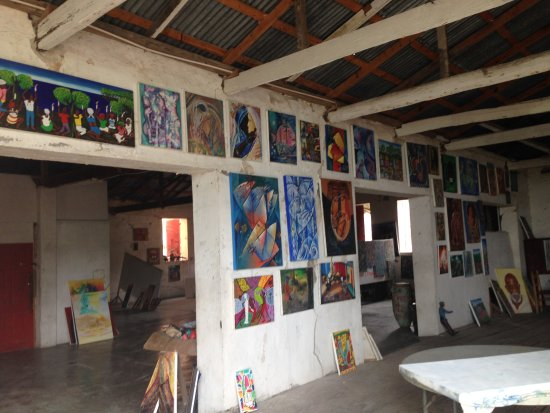
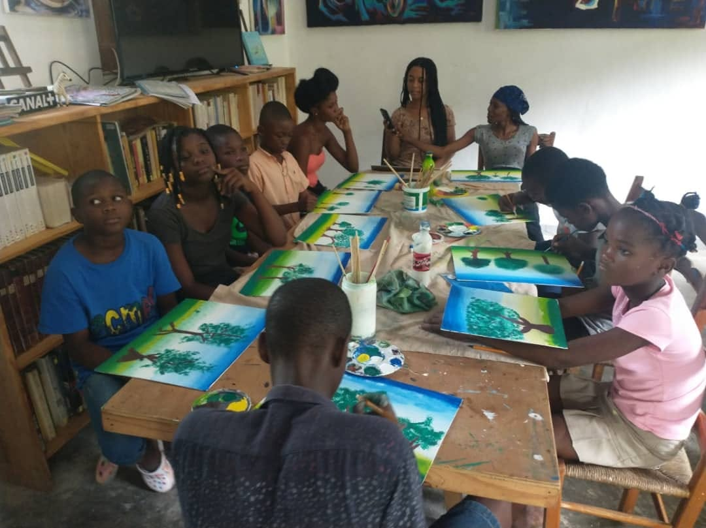

Ville d'histoire, de culture et de paysages exceptionnels, Jacmel est l'une des plus belles destinations touristiques d'Haïti. À travers cette présentation, découvrez quelques-uns de ses sites les plus remarquables et laissez-vous séduire par la richesse de son patrimoine naturel et culturel.
Bassin Bleu

Le Bassin Bleu est l'un des plus beaux sites naturels d'Haïti et une destination incontournable de la région de Jacmel, située dans le département du Sud-Est. À environ 12 kilomètres au nord-ouest de la ville, ce lieu enchanteur est niché au cœur d'une végétation tropicale dense, où règnent le calme, la fraîcheur et une biodiversité remarquable.
Le site est constitué de plusieurs bassins naturels reliés par de magnifiques cascades, alimentés par la Petite Rivière de Jacmel. La couleur bleu turquoise de ses eaux, due à la pureté de l'eau, à la profondeur des bassins et à la réflexion de la lumière, lui a valu le nom de « Bassin Bleu ».
Chaque bassin possède ses propres caractéristiques, avec des profondeurs et des dimensions variées, offrant aux visiteurs une expérience unique. Les cascades qui se déversent dans les bassins créent un spectacle naturel impressionnant et une ambiance paisible propice à la détente. Pour accéder au site, les visiteurs empruntent un sentier de randonnée traversant une forêt tropicale où l'on peut admirer une flore abondante, des arbres centenaires, des oiseaux et d'autres espèces locales.

Le Bassin Bleu est très apprécié des amateurs de nature, de photographie et d'écotourisme. Les visiteurs peuvent s'y baigner dans une eau fraîche et cristalline, observer les cascades, explorer les différents bassins ou simplement profiter du calme de cet environnement préservé. Ce site attire chaque année des milliers de touristes haïtiens et étrangers, contribuant ainsi au développement économique de la région.
Le Bassin Bleu est bien plus qu'une simple destination touristique. C'est un lieu où la nature raconte son histoire, où le silence apaise l'esprit, où le chant des oiseaux accompagne le bruit des cascades et où chaque visite devient un souvenir inoubliable. Cet espace invite à ralentir, à respirer, à sourire et à renouer avec la beauté simple que nous offre notre environnement.
Plage Raymond Les Bains

Raymond-les-Bains est l'une des plus belles plages de la région de Jacmel, située dans la commune de Cayes-Jacmel, sur la côte sud-est d'Haïti. Réputée pour son sable doré, ses eaux calmes et cristallines ainsi que son cadre naturel paisible, cette plage est une destination idéale pour les amoureux de la mer et de la détente. Bordée de cocotiers et offrant une vue imprenable sur la mer des Caraïbes, elle attire chaque année de nombreux visiteurs, aussi bien des habitants que des touristes nationaux et internationaux.
Ce site est particulièrement apprécié pour la baignade, les promenades en bord de mer, les pique-niques en famille, les séances de photographie et les activités nautiques. Les visiteurs peuvent également y déguster des spécialités locales, notamment des fruits de mer frais et des plats traditionnels haïtiens proposés par les restaurants installés à proximité de la plage.
Au-delà de son attrait touristique, Raymond-les-Bains représente un patrimoine naturel important pour la région de Jacmel. Ce site contribue au développement économique local grâce aux activités des pêcheurs, des artisans, des commerçants et des opérateurs touristiques.
Cathédrale Saint-Jacques et Saint-Philippe

La Cathédrale Saint-Jacques-et-Saint-Philippe de Jacmel est l'un des monuments religieux et historiques les plus importants d'Haïti. Située au cœur de la ville de Jacmel, elle constitue un symbole de foi, de patrimoine et d'identité culturelle pour la population locale. Construite au XIXe siècle dans un style architectural remarquable, la cathédrale se distinguait par sa façade élégante, ses grandes colonnes, ses vitraux et son vaste intérieur pouvant accueillir des centaines de fidèles.
Le 12 janvier 2010, la cathédrale a été gravement endommagée par le puissant séisme qui a frappé Haïti. Une grande partie de l'édifice s'est effondrée, laissant derrière elle un profond sentiment de tristesse pour les habitants de Jacmel. Malgré cette tragédie, les ruines de la cathédrale sont restées un symbole de résilience, rappelant la force et le courage du peuple haïtien face aux épreuves.
Aujourd'hui, des efforts de préservation et de reconstruction témoignent de la volonté de redonner vie à ce patrimoine exceptionnel. La Cathédrale Saint-Jacques-et-Saint-Philippe demeure un lieu chargé d'histoire, de spiritualité et de mémoire.
Centre Historique (Moulin Prince de Jacmel)

Le Moulin Price est l'un des monuments industriels les plus anciens et les plus remarquables d'Haïti. Situé dans la localité de Démontreuil, près de Jacmel, il s'agit d'une ancienne machine à vapeur destinée à l'extraction du jus de canne à sucre. Fabriqué en 1818 à Liverpool, en Angleterre, par la compagnie Js Lindsay & Co. – Haigh Iron Works, ce moulin représente l'une des premières machines à vapeur de ce type introduites dans les Caraïbes.
Malgré le passage du temps, le Moulin Price demeure un remarquable témoin du patrimoine industriel haïtien. Son imposante structure en fonte, composée notamment de la chaudière, du balancier, des cylindres et des pistons, est encore visible aujourd'hui. Selon plusieurs historiens, cette machine aurait très peu, voire jamais, été utilisée, ce qui explique son excellent état de conservation après plus de deux siècles.
Aujourd'hui, le Moulin Price est considéré comme un patrimoine culturel et historique majeur de la région de Jacmel. Il rappelle le rôle important qu'a joué l'industrie de la canne à sucre dans l'histoire d'Haïti.
Galerie d'Art

L'Upstairs Reserve Gallery est un espace d'exposition situé à l'étage du Jacmel Arts Center, au cœur du centre historique de Jacmel. Cette galerie est consacrée à la mise en valeur des œuvres d'artistes haïtiens, notamment des peintures, sculptures, objets artisanaux et créations contemporaines qui témoignent de la richesse culturelle et artistique de la région.
Installée dans un bâtiment au charme historique, l'Upstairs Reserve Gallery fait partie du Jacmel Arts Center, reconnu comme l'un des principaux espaces culturels de la ville. La galerie accueille régulièrement des expositions permanentes et temporaires, permettant aux visiteurs d'explorer la diversité des expressions artistiques haïtiennes.

Le Centre Culturel Solèy Leve est un espace culturel situé à Lafond, près de Jacmel, fondé par le peintre, poète et animateur culturel haïtien Rénold Laurent. Inauguré en 2017, ce centre est né de la vision de son fondateur, qui souhaitait offrir aux jeunes et à la communauté un lieu consacré à l'éducation, à la création artistique et à la valorisation du patrimoine culturel haïtien.
Le Centre Culturel Solèy Leve accueille de nombreuses activités telles que des ateliers de peinture, de sculpture, d'artisanat, de musique, de danse, de poésie, ainsi que des formations, des conférences, des expositions et des rencontres culturelles. Il offre aux artistes, aux étudiants et aux visiteurs un espace où la créativité, le partage et l'innovation sont encouragés.